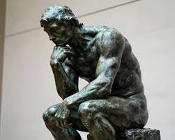

A student visited an art gallery and was amazed that a simple block of wood had been transformed into a beautiful work of art. The artist saw something others could not see and brought it to life. That is the power of Sculpture.
Sculpture is the art of creating three-dimensional works using materials such as wood, clay, stone, metal, plaster, and other materials. It allows artists to express ideas, emotions, culture, and creativity through physical forms.
Many students think Sculpture is only about carving wood. In reality, sculpture is used in architecture, public monuments, product design, interior decoration, entertainment, and cultural preservation. It combines creativity, craftsmanship, and innovation.
This is only a small introduction. If you want to understand how programmes connect to university courses, careers, opportunities, and future success, get a copy of:
The guide designed to help students make informed decisions about their future and discover opportunities they may never have considered.